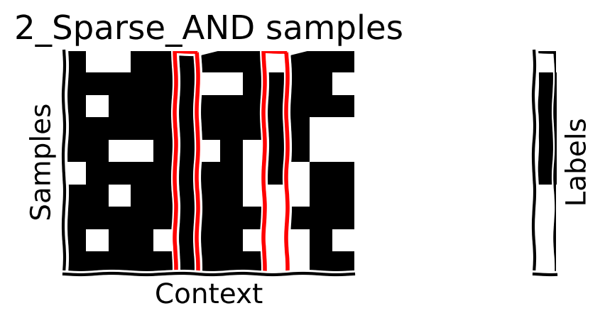

Tutorial 3: Attention#
Week 1, Day 5: Microcircuits
By Neuromatch Academy
Content creators: Saaketh Medepalli, Aditya Singh, Saeed Salehi, Xaq Pitkow
Content reviewers: Yizhou Chen, RyeongKyung Yoon, Ruiyi Zhang, Lily Chamakura, Hlib Solodzhuk, Alex Murphy
Production editors: Konstantine Tsafatinos, Ella Batty, Spiros Chavlis, Samuele Bolotta, Hlib Solodzhuk, Alex Murphy
Tutorial Objectives#
Estimated timing of tutorial: 1 hour
By the end of this tutorial, we aim to:
Learn how the brain and AI systems implement attention
Understand how multiplicative interactions allow flexible gating of information
Demonstrate the inductive bias of the self-attention mechanism towards learning functions of sparse subsets of variables
A key microarchitectural operation in brains and machines is attention. The essence of this operation is multiplication. Unlike the vanilla neural network operation – a nonlinear function of a weighted sum of inputs \(f(\sum_j w_{j}x_j)\) – the attention operation allows for some input elements to be up-weighted if they are considered relevant to the current operational step, or down-weighted if they are not relevant. This weighting of inputs is done by element-wise multiplication of the inputs. For example, if you are classifying sentiment of movie reviews (a NLP task), you would multiple tokens such as amazing, fantastic, awful by high values and downweight tokens such as the, if, director because they aren’t relevant to the task of detecting the sentiment of a movie review. These multiplicative interactions to gate information flow is a very important operation, which we will explore in greater detail in this tutorial.
In brains, the theory of the Spotlight Attention (Posner et al 1980) posited that gain modulation allowed brain computations to select information for later computation. What do we mean by gain modulation in this context? We mean the ability to up-weight or down-weight responses in a system. You can think of the gating mechanism in recurrent models like LSTMs (e.g. the forget gate, the recurrent gate, the output gate) as implementing a form of gain modulation. We take the input, which is transformed non-linearly and used to modulate the passing of information through the network. In machines, Rumelhart, Hinton, and McClelland (1986) described Sigma-Pi networks that included both sums (\(\Sigma\)) and products (\(\Pi\)) as fundamental operations. The Transformer network (Vaswani et al 2017) used a specific architecture featuring layers of multiplication, sparsification, and normalization. Many machine learning systems since then have fruitfully applied this architecture to language, vision, and many more modalities.
In this tutorial we will isolate the central properties and generalization benefits of multiplicative attention shared by all of these applications. Exercises include simple attentional modulation of inputs, coding the self-attention mechanism, demonstrating its inductive bias, and interpreting the consequences of attention.
References:
Posner MI, Snyder CR, Davidson BJ (1980). Attention and the detection of signals. Journal of experimental psychology: General. 109(2):160.
Rumelhart DE, Hinton G, McClelland JL, PDP Research Group (1986). Parallel Distributed Processing. MIT press.
Vaswani A, Shazeer N, Parmar N, Uszkoreit J, Jones L, Gomez AN, Kaiser Ł, Polosukhin I (2017). Attention is all you need. Advances in Neural Information Processing Systems.
Thomas Viehmann, toroidal - a lightweight transformer library for PyTorch
Edelman B, Goel S, Kakade S, Zhang C (2022). Inductive biases and variable creation in self-attention mechanisms. PMLR.
Deep Graph Library Tutorials, Transformer as a Graph Neural Network
Lilian Weng, Attention? Attention!
If you want to download the slides: https://osf.io/download/eckvr/
<__main__._NoOpWidget at 0x7f695c142470>
Setup#
Install and import feedback gadget#
Show code cell source
# @title Install and import feedback gadget
!pip install vibecheck datatops --quiet
from vibecheck import DatatopsContentReviewContainer
def content_review(notebook_section: str):
return DatatopsContentReviewContainer(
"", # No text prompt
notebook_section,
{
"url": "https://pmyvdlilci.execute-api.us-east-1.amazonaws.com/klab",
"name": "neuromatch_neuroai",
"user_key": "wb2cxze8",
},
).render()
feedback_prefix = "W1D5_T3"
Imports#
Show code cell source
# @title Imports
import os
import sys
import math
import torch
import random
import numpy as np
import matplotlib.pyplot as plt
Figure settings#
Show code cell source
# @title Figure settings
import logging
import matplotlib.cm as cm
import ipywidgets as widgets # interactive display
from ipywidgets import interactive, FloatSlider, Layout
logging.getLogger('matplotlib.font_manager').disabled = True
%config InlineBackend.figure_format = 'retina'
plt.style.use("https://raw.githubusercontent.com/NeuromatchAcademy/course-content/NMA2020/nma.mplstyle")
fig_w, fig_h = plt.rcParams['figure.figsize']
Plotting functions#
Show code cell source
# @title Plotting functions
def plot_loss_accuracy(t_loss, t_acc, v_loss = None, v_acc = None):
with plt.xkcd():
plt.figure(figsize=(15, 4))
plt.suptitle("Training and Validation for the Transformer Model")
plt.subplot(1, 2, 1)
plt.plot(t_loss, label="Training loss", color="red")
if v_loss is not None:
# plt.plot(v_loss, label="Validation loss", color="blue")
plt.scatter(len(t_loss)-1, v_loss, label="Validation loss", color="blue", marker="*")
# plt.text(len(t_loss)-1, v_loss, f"{v_loss:.3f}", va="bottom", ha="right")
plt.yscale("log")
plt.xlabel("Epoch")
plt.ylabel("Loss")
plt.xticks([])
plt.legend(loc="lower right")
plt.subplot(1, 2, 2)
plt.plot(t_acc, label="Training accuracy", color="red", linestyle="dotted")
if v_acc is not None:
# plt.plot(v_acc, label="Validation accuracy", color="blue", linestyle="--")
plt.scatter(len(t_acc)-1, v_acc, label="Validation accuracy", color="blue", marker="*")
# plt.text(len(t_acc)-1, v_acc, f"{v_acc:.3f}", va="bottom", ha="right")
plt.xticks([])
plt.ylim(0, 1)
plt.xlabel("Epoch")
plt.ylabel("Accuracy")
plt.legend(loc="lower right")
plt.show()
def plot_samples(X_plot, y_plot, correct_ids, title=None):
with plt.xkcd():
n_samples, seq_length = X_plot.shape
fig, axs = plt.subplots(1, 2, figsize=(16, 2.5), sharey=True)
rects = []
for ri in correct_ids:
rects.append(plt.Rectangle((ri-0.5, -0.5), 1, n_samples, edgecolor="red", alpha=1.0, fill=False, linewidth=2))
axs[0].imshow(X_plot, cmap="binary")
for rect in rects:
axs[0].add_patch(rect)
# axs[0].axis("off")
axs[0].set_yticks([])
axs[0].set_xticks([])
axs[0].set_ylabel("Samples")
axs[0].set_xlabel("Context")
if title is not None:
axs[0].set_title(title)
axs[1].imshow(y_plot, cmap="binary")
axs[1].add_patch(plt.Rectangle((-0.5, -0.5), 1, n_samples, edgecolor="black", alpha=1.0, fill=False, linewidth=2))
axs[1].yaxis.set_label_position("right")
axs[1].set_ylabel("Labels")
axs[1].set_yticks([])
axs[1].set_xticks([])
plt.subplots_adjust(wspace=-1)
plt.tight_layout()
plt.show()
def plot_attention_weights(att_weights, correct_ids, context_length, labels):
with plt.xkcd():
from matplotlib.lines import Line2D
B = att_weights.size(0)
aw_flatten = att_weights[:, -1, :-1].view(-1, context_length)
x_axis = torch.arange(context_length).repeat(B, 1)
y_axis = labels.view(-1, 1).repeat(1, context_length)
aw_ravel = aw_flatten.ravel()
x_ravel = x_axis.ravel()
y_ravel = y_axis.ravel()
fig, ax = plt.subplots(figsize=(9, 5))
colors = ["#1E88E5", "#FFC107"]
labels_legened = ["True", "False"]
ax.scatter(x_ravel, aw_ravel, alpha=0.5, c=[colors[int(y)] for y in y_ravel])
rects = []
for ri in correct_ids:
# rects.append(plt.Rectangle((ri-0.5, 1e-6), 1.0, 2.0, edgecolor="blue", alpha=1.0, fill=False, linewidth=2))
rects.append(plt.Rectangle((ri-0.5, -0.1), 1.0, 0.8, edgecolor="red", alpha=1.0, fill=False, linewidth=2))
for rect in rects:
ax.add_patch(rect)
# plt.yscale("log")
# plt.ylim(1e-6, 2)
plt.ylim(-0.1, 0.7)
plt.title("Attention weights for the whole batch")
plt.xlabel("Boolean input index t")
plt.ylabel("Attention weight")
legend_elements = [Line2D([0], [0], linestyle='None', marker='o', color='#1E88E5', label='True', markerfacecolor='#1E88E5', markersize=7),
Line2D([0], [0], linestyle='None', marker='o', color='#FFC107', label='False', markerfacecolor='#FFC107', markersize=7)]
ax.legend(handles=legend_elements, loc='upper right')
plt.show()
def plot_attention_weights_stats(att_weights, correct_ids, context_length, labels):
with plt.xkcd():
aw_flatten = att_weights[:, -1, :-1].view(-1, context_length)
aw_flatten_mean = aw_flatten.mean(dim=0)
aw_flatten_std = aw_flatten.std(dim=0)
fig, ax = plt.subplots(figsize=(9, 5))
ax.errorbar(torch.arange(context_length), aw_flatten_mean, yerr=aw_flatten_std, fmt='o', color='blue')
rects = []
for ri in correct_ids:
rects.append(plt.Rectangle((ri-0.5, -0.1), 1.0, 0.8, edgecolor="red", alpha=1.0, fill=False, linewidth=2))
for rect in rects:
ax.add_patch(rect)
plt.title("Attention weights statistics")
plt.xlabel("Boolean input index t")
plt.ylabel("Mean attention weight")
plt.ylim(-0.1, 0.7)
plt.show()
def plot_compare(results_sat_d, results_sat_s, results_mlp_d, results_mlp_s,
B_t_sat_s, B_t_sat_d, B_t_mlp_s, B_t_mlp_d):
with plt.xkcd():
from matplotlib.colors import LinearSegmentedColormap
cmap=LinearSegmentedColormap.from_list('rg',["w", "w", "r", "y", "g"], N=256)
t_loss_sat_d, t_acc_sat_d, v_loss_sat_d, v_acc_sat_d, model_np_sat_d = results_sat_d
t_loss_sat_s, t_acc_sat_s, v_loss_sat_s, v_acc_sat_s, model_np_sat_s = results_sat_s
t_loss_mlp_d, t_acc_mlp_d, v_loss_mlp_d, v_acc_mlp_d, model_np_mlp_d = results_mlp_d
t_loss_mlp_s, t_acc_mlp_s, v_loss_mlp_s, v_acc_mlp_s, model_np_mlp_s = results_mlp_s
plt.figure(figsize=(8, 6))
plt.subplot(2, 2, 1)
plt.title("sparse", fontsize=16)
plt.ylabel("Attention", fontsize=16)
plt.barh(3, 0, color="blue")
plt.barh(4, 0, color="green")
plt.text(0.05, 3.5, f"# Parameters: {model_np_sat_s}")
plt.text(0.05, 3.0, f"# samples: {B_t_sat_s}")
plt.barh(2, t_acc_sat_s, color=cmap(t_acc_sat_s))
plt.barh(1, v_acc_sat_s, color=cmap(v_acc_sat_s))
plt.text(0.05, 2, f"# training acc: {t_acc_sat_s:.0%}")
plt.text(0.05, 1, f"# validation acc: {v_acc_sat_s:.0%}")
plt.xticks([])
plt.yticks([])
plt.subplot(2, 2, 2)
plt.title("dense", fontsize=16)
plt.barh(3, 0, color="blue")
plt.barh(4, 0, color="green")
plt.text(0.05, 3.5, f"# Parameters: {model_np_sat_d}")
plt.text(0.05, 3.0, f"# samples: {B_t_sat_d}")
plt.barh(2, t_acc_sat_d, color=cmap(t_acc_sat_d))
plt.barh(1, v_acc_sat_d, color=cmap(v_acc_sat_d))
plt.text(0.05, 2, f"# training acc: {t_acc_sat_d:.0%}")
plt.text(0.05, 1, f"# validation acc: {v_acc_sat_d:.0%}")
plt.xticks([])
plt.yticks([])
plt.subplot(2, 2, 3)
plt.barh(3, 0, color="blue")
plt.barh(4, 0, color="green")
plt.text(0.05, 3.5, f"# Parameters: {model_np_mlp_s}")
plt.text(0.05, 3.0, f"# samples: {B_t_mlp_s}")
plt.barh(2, t_acc_mlp_s, color=cmap(t_acc_mlp_s))
plt.barh(1, v_acc_mlp_s, color=cmap(v_acc_mlp_s))
plt.text(0.05, 2, f"# training acc: {t_acc_mlp_s:.0%}")
plt.text(0.05, 1, f"# validation acc: {v_acc_mlp_s:.0%}")
plt.xticks([])
plt.yticks([])
plt.ylabel("MLP", fontsize=16)
plt.subplot(2, 2, 4)
plt.barh(3, 0, color="blue")
plt.barh(4, 0, color="green")
plt.text(0.05, 3.5, f"# Parameters: {model_np_mlp_d}")
plt.text(0.05, 3.0, f"# samples: {B_t_mlp_d}")
plt.barh(2, t_acc_mlp_d, color=cmap(t_acc_mlp_d))
plt.barh(1, v_acc_mlp_d, color=cmap(v_acc_mlp_d))
plt.text(0.05, 2, f"# training acc: {t_acc_mlp_d:.0%}")
plt.text(0.05, 1, f"# validation acc: {v_acc_mlp_d:.0%}")
plt.xticks([])
plt.yticks([])
plt.axis("off")
plt.show()
def gained_dot_product_attention_implemented(x: torch.Tensor, # input vector
q_1: torch.Tensor, # query vector 1
q_2: torch.Tensor, # query vector 2
z_1: float, # query gain 1
z_2: float, # query gain 2
):
"""This function computes the gained dot product attention
Args:
x (Tensor): input vector
q_1 (Tensor): query vector 1
q_2 (Tensor): query vector 2
z_1 (float): query gain 1
z_2 (float): query gain 2
Returns:
w (Tensor): attention weights
y (float): gained dot product attention
"""
w = torch.softmax(z_1 * q_1 + z_2 * q_2, dim=0)
y = torch.dot(w, x)
return w, y
def plot_weights_and_output(gain_1, gain_2):
T = 20 # context length
x = torch.sin(torch.linspace(0, 2*np.pi, T)) + 0.1 * torch.randn(T)
q_1 = 1.0 - torch.sigmoid(torch.linspace(-3, 7, T))
q_1 = q_1 / q_1.sum()
q_2 = torch.sigmoid(torch.linspace(-7, 3, T))
q_2 = q_2 / q_2.sum()
w, y = gained_dot_product_attention_implemented(x, q_1, q_2, gain_1, gain_2)
print(f"output y: {y}")
with plt.xkcd():
plt.figure(figsize=(8, 6))
plt.subplot(2, 1, 1)
plt.plot(q_1, label="$\mathbf{q_1}$", c="m")
plt.plot(q_2, label="$\mathbf{q_2}$", c="y")
plt.plot(w, label="$\mathbf{w}$", c="r")
plt.ylim(-0.1, max(q_1.max(), q_2.max()))
plt.ylabel("Attention weights")
plt.xlabel("Context dimension")
plt.legend()
plt.subplot(2, 1, 2)
plt.plot(x, label="$\mathbf{x}$", c="blue")
plt.plot(5 * x * w, label="$5\mathbf{w}*\mathbf{x}$", c="red")
plt.ylim(-x.abs().max(), x.abs().max())
plt.ylabel("Amplitude")
plt.xlabel("Context")
plt.legend()
plt.show()
def plot_attention_graph(model, data_generator, batch_size):
with plt.xkcd():
X_valid, y_valid = data_generator.generate(batch_size, verbose=False)
logits, scores, attention, output = model(X_valid, elaborate=True)
with torch.no_grad():
scores_x_linear = torch.einsum("bij,jk->bik", scores, model.linear.weight.T).detach().cpu()
w_att_trues_0 = scores_x_linear[(y_valid[:, 0] == 1) & (X_valid[:, -1] == 0)]
w_att_trues_1 = scores_x_linear[(y_valid[:, 0] == 1) & (X_valid[:, -1] == 1)]
#print(f"{w_att_trues_0 =}")
#print(f"{w_att_trues_1 =}")
w_att_trues_0 = w_att_trues_0.mean(dim=0).squeeze(-1)
w_att_trues_1 = w_att_trues_1.mean(dim=0).squeeze(-1)
print(f"{w_att_trues_0 =}")
print(f"{w_att_trues_1 =}")
fig, ax = plt.subplots(2, 1, figsize=(10, 8))
rules = ["Rule = 0", "Rule = 1"]
for r, x in enumerate((w_att_trues_0, w_att_trues_1)):
#xc = (x - x.min()) / (x.max() - x.min() + 1e-9)
xc = (x + x.abs().max()) / (2 * x.abs().max()) # color range spans -max|x| to +max|x|
xw = x.abs() / x.abs().max()
xa = (xw - xw.min()) / (xw.max() - xw.min() + 1e-9)
xabsmax = x.abs().max()
x, xc, xw, xa = (some_x.numpy() for some_x in (x, xc, xw, xa))
T = x.shape[0]
batch_size = (T/2) - 0.5
ax[r].text(batch_size-1, 1.0, " ", c='k', fontsize=16)
ax[r].text(batch_size-1, 0.9, f"Graph for {rules[r]}", c='k', fontsize=16)
for i in range(T):
c = 'r' if i in data_generator.f_i_1 else 'b' if i in data_generator.f_i_2 else 'm' if i == T-1 else'grey'
ax[r].plot([i, batch_size], [0, 0.75], c=cm.plasma_r(xc[i]), linewidth=5, alpha=1)
ax[r].scatter([i], [0], c=c, zorder=100, s=100)
ax[r].scatter([batch_size], [0.75], c='k', zorder=100, s=200)
for i, j in zip(data_generator.f_i_1, data_generator.f_i_2):
ax[r].text(i-0.3, -0.1, "tar_0", c='r', fontsize=12)
ax[r].text(j-0.3, -0.1, "tar_1", c='b', fontsize=12)
ax[r].text(batch_size-0.3, 0.8, "Output", c='k', fontsize=12)
ax[r].text(T-1-0.1, -0.1, "Rule", c='m', fontsize=12)
cbar = fig.colorbar(cm.ScalarMappable(cmap=cm.plasma_r), ax=ax[r], ticks=[0, 1], label="Attention")
#cbar.ax.set_yticklabels([f"{x.min():.1f}", f"{x.max():.1f}"])
cbar.ax.set_yticklabels([f"{-xabsmax:.1f}", f"{xabsmax:.1f}"])
ax[r].axis('off')
plt.show()
Data retrieval#
Show code cell source
#@title Data retrieval
class s_Sparse_AND: # 1-Dimensional AND
def __init__(self, T: int, s: int):
self.T = T # context length
self.s = s # sparsity
self.p = 0.5**(1.0/3.0) # probability chosen for balanced data
self.f_i = None
def pick_an_f(self):
self.f_i = sorted(random.sample(range(self.T), self.s))
self.others = list(i for i in range(self.T) if i not in self.f_i)
def generate(self, m: int, verbose: bool = False):
if self.f_i is None:
self.pick_an_f()
max_try = 100
i_try = 0
while i_try < max_try:
i_try += 1
X, y = torch.zeros(m, self.T), torch.zeros(m, 1)
X[torch.rand(m, self.T) < self.p] = 1
y[X[:, self.f_i].sum(dim=1) == self.s] = 1
if y.sum()/m < 0.4 or y.sum()/m > 0.6:
verbose and print(f"Large imbalance in the training set {y.sum()/m}, retrying...")
continue
else:
verbose and print(f"Data-label balance: {y.sum()/m}")
bad_batch = False
for i in self.f_i:
for o in self.others:
if (X[:, i] == X[:, o]).all():
verbose and print(f"Found at least another compatible hypothesis {i} and {o}")
bad_batch = True
break
if bad_batch:
continue
else:
break
else:
verbose and print("Could not find a compatible hypothesis")
return X.long(), y.float()
class s_Sparse_AND_Query: # 1-Dimensional AND
def __init__(self, T, s):
self.T = T - 1
self.k = 1 # currently only for k = 1
self.s = s
self.p = 0.5**(1.0/2.0) # probability chosen for balanced data
self.f_i_1, self.f_i_2, self.f_i = None, None, None
def pick_an_f(self):
self.f_i_1 = sorted(random.sample(range(self.T), self.s))
self.others_1 = list(i for i in range(self.T) if i not in self.f_i_1)
self.f_i_2 = sorted(random.sample(self.others_1, self.s))
self.others_2 = list(i for i in self.others_1 if i not in self.f_i_2)
self.f_i = self.f_i_1 + self.f_i_2
def __call__(self):
self.pick_an_f()
def generate(self, m: int, verbose: bool = False):
z = torch.randint(0, 2, (m, self.k))
if self.f_i_1 is None or self.f_i_2 is None:
self.pick_an_f()
max_try = 100
i_try = 0
while i_try < max_try:
i_try += 1
X, y = torch.zeros(m, self.T), torch.zeros(m, 1)
X[torch.rand(m, self.T) < self.p] = 1
# Rule 0
X_z_0 = (X[:, self.f_i_1].sum(dim=1) == self.s) & (z[:, 0] == 0)
y[X_z_0] = 1
# Rule 1
X_z_1 = (X[:, self.f_i_2].sum(dim=1) == self.s) & (z[:, 0] == 1)
y[X_z_1] = 1
if y.sum()/m < 0.45 or y.sum()/m > 0.55:
verbose and print(f"Large imbalance in the training set {y.sum()/m}, retrying...")
continue
else:
verbose and print(f"Data-label balance: {y.sum()/m}")
break
else:
verbose and print("Could not find a compatible hypothesis")
return torch.cat([X, z], dim=1).long(), y.float()
# From notebook
# Load an example image from the imagenet-sample-images repository
def load_image(path):
"""
Load an image from a given path
Args:
path: String
Path to the image
Returns:
img: PIL Image
Image loaded from the path
"""
img = Image.open(path)
return img
Helper functions#
Show code cell source
# @title Helper functions
class BinaryMLP(torch.nn.Module):
def __init__(self, in_dims, h_dims, out_dims, dropout=0.1):
super().__init__()
self.in_dims = in_dims
self.h_dims = h_dims
self.out_dims = out_dims
self.layers = torch.nn.ModuleList()
self.layers.append(torch.nn.Linear(in_dims, h_dims[0]))
torch.nn.init.normal_(self.layers[-1].weight, std=0.02)
torch.nn.init.zeros_(self.layers[-1].bias)
self.layers.append(torch.nn.GELU())
self.layers.append(torch.nn.Dropout(dropout))
for i in range(len(h_dims) - 1):
self.layers.append(torch.nn.Linear(h_dims[i], h_dims[i+1]))
torch.nn.init.normal_(self.layers[-1].weight, std=0.02)
torch.nn.init.zeros_(self.layers[-1].bias)
self.layers.append(torch.nn.GELU())
self.layers.append(torch.nn.Dropout(dropout))
self.layers.append(torch.nn.Linear(h_dims[-1], out_dims))
self.layers.append(torch.nn.Sigmoid())
def forward(self, x):
for layer in self.layers:
x = layer(x)
return x
class SelfAttention(torch.nn.Module):
"""Simple Binary Self-Attention
"""
def __init__(self, T: int, d: int):
"""
Args:
T (int): context length
d (int): embedding size for K, Q but not V
Note:
The embedding size for V is the same as the input size i.e. 1
"""
super().__init__()
self.T = T # context length
self.d = d # embedding size
self.scale = self.d ** -0.5 # scaling factor (1 / sqrt(d_k))
self.v = 2 # vocabulary size (binary input, 0 or 1)
init_std = 0.001 # standard deviation for weight initialization
# embedding layers
self.tokenizer = torch.nn.Embedding(self.v, self.d) # token embedding
self.positioner = torch.nn.Parameter(torch.rand(1, self.T, self.d)) # positional embedding
# self-attention layers
self.Wq = torch.nn.Linear(self.d, self.d, bias=False) # query layer
self.Wk = torch.nn.Linear(self.d, self.d, bias=False) # key layer
self.Wv = torch.nn.Linear(self.d, 1, bias=False) # value layer
# projection layer
self.linear = torch.nn.Linear(self.T, 1, bias=False) # projection layer
torch.nn.init.normal_(self.linear.weight, std=init_std)
# torch.nn.init.zeros_(self.linear.bias)
# initialize weights and biases (per description in the paper)
torch.nn.init.normal_(self.tokenizer.weight, std=init_std)
torch.nn.init.normal_(self.positioner, std=init_std)
torch.nn.init.normal_(self.Wq.weight, std=init_std)
# torch.nn.init.zeros_(self.Wq.bias)
torch.nn.init.normal_(self.Wk.weight, std=init_std)
# torch.nn.init.zeros_(self.Wk.bias)
torch.nn.init.normal_(self.Wv.weight, std=init_std)
# torch.nn.init.zeros_(self.Wv.bias)
def forward(self, x: torch.Tensor, elaborate: bool = False):
"""Forward pass
Args:
x (torch.Tensor): input tensor of shape (B, T, d)
"""
# Embedding
x = self.tokenizer(x)
x = x + self.positioner
# (Scaled Dot-Product Attention)
Q = self.Wq(x)
K = self.Wk(x)
V = self.Wv(x)
logits = torch.einsum("btc,bsc->bts", Q, K) # query key product
logits *= self.scale # normalize against staturation
scores = torch.softmax(logits, dim=-1) # attention scores
attention = torch.einsum("bts,bsc->btc", scores, V) # scaled dot-product attention
attention = attention.squeeze(-1) # remove last dimension
output = self.linear(attention) # linear layer
output = torch.sigmoid(output) # sigmoid activation
return (logits, scores, attention, output) if elaborate else output
class PositionalEncoding(torch.nn.Module):
def __init__(self, T: int, d_model: int):
super().__init__()
Te = T + T%2
de = d_model + d_model%2
position = torch.arange(Te).unsqueeze(1)
div_term = torch.exp(torch.arange(0, de, 2) * (-math.log(10000.0) / de))
pe = torch.zeros(Te, de)
pe[:, 0::2] = torch.sin(position * div_term)
pe[:, 1::2] = torch.cos(position * div_term)
pe = pe[:T, :d_model]
self.register_buffer('pe', pe)
def forward(self):
return self.pe
class SDPA_Solution(torch.nn.Module):
def __init__(self, T: int, dm: int, dk: int):
"""
Scaled Dot Product Attention
Args:
T (int): context length
dm (int): model dimension
dk (int): key dimension
Note:
we assume dm == dv
"""
super().__init__()
self.T = T # context length
self.dm = dm # model dimension
self.dk = dk # key dimension
self.scale = 1.0 / math.sqrt(dk)
# positional Encoding
self.position = PositionalEncoding(T, dm)
# self-attention layers
self.Wq = torch.nn.Linear(dm, dk, bias=False) # query layer
self.Wk = torch.nn.Linear(dm, dk, bias=False) # key layer
self.Wv = torch.nn.Linear(dm, dm, bias=False) # value layer
def forward(self, x: torch.Tensor):
"""
Args:
x (torch.Tensor): input tensor of shape (T, d)
"""
# Positional Encoding
x = x + self.position()
# (Scaled Dot-Product Attention)
Q = self.Wq(x) # Query
K = self.Wk(x) # Key
V = self.Wv(x) # Value
QK = Q @ K.T # Query Key product
S = QK * self.scale # Scores (scaled against staturation)
S_softmax = torch.softmax(S, dim=-1) # softmax attention scores (row dimensions)
A = S_softmax @ V # scaled dot-product attention
return A
def test_sdpa(your_implementation):
# self-attention layers
context_len = 7
model_dim = 5
key_dim = 3
toy_x = torch.rand(context_len, model_dim)
your_model = your_implementation(context_len, model_dim, key_dim)
our_model = SDPA_Solution(context_len, model_dim, key_dim)
your_model.Wq = our_model.Wq
your_model.Wk = our_model.Wk
your_model.Wv = our_model.Wv
your_results = your_model(toy_x.clone())
our_results = our_model(toy_x.clone())
if (your_results == our_results).all():
print("Very well Done!")
else:
print("The two implementations should produce the same result!")
def bin_acc(y_hat, y):
"""
Compute the binary accuracy
"""
y_ = y_hat.round()
TP_TN = (y_ == y).float().sum().item()
FP_FN = (y_ != y).float().sum().item()
assert TP_TN + FP_FN == y.numel(), f"{TP_TN + FP_FN} != {y.numel()}"
return TP_TN / y.numel()
def get_n_parameters(model: torch.nn.Module):
"""
Get the number of learnable parameters in a model
"""
i = 0
for par in model.parameters():
i += par.numel()
return i
def save_model(model):
torch.save(model.state_dict(), 'model_states.pt')
def load_model(model):
model_states = torch.load('model_states.pt')
model.load_state_dict(model_states)
class Trainer:
def __init__(self, model, optimizer, criterion):
self.model = model
self.optimizer = optimizer
self.criterion = criterion
def do_eval(self, X_v, y_v, device="cpu"):
self.model.to(device)
self.model.eval()
X_v, y_v = X_v.to(device), y_v.to(device)
with torch.no_grad():
y_hat = self.model(X_v)
loss = self.criterion(y_hat.squeeze(), y_v.squeeze())
acc = bin_acc(y_hat, y_v)
self.model.to("cpu")
return loss.item(), acc
def do_train(self, n_epochs, X_t, y_t, device="cpu"):
train_loss, train_acc = [], []
self.model.to(device)
self.model.train()
X_t, y_t = X_t.to(device), y_t.to(device)
for i in range(n_epochs):
self.optimizer.zero_grad(set_to_none=True)
y_hat = self.model(X_t)
loss_t = self.criterion(y_hat.squeeze(), y_t.squeeze())
loss_t.backward()
self.optimizer.step()
self.optimizer.zero_grad(set_to_none=True)
if (i + 1) % 10 == 0 or i == 0:
train_loss.append(loss_t.item())
train_acc.append(bin_acc(y_hat, y_t))
self.model.eval()
self.model.to("cpu")
return train_loss, train_acc
def make_train(model, data_gen, B_t, B_v, n_epochs, device="cpu", kind="MLP", verbose=False, etta=1e-2):
X_train, y_train = data_gen.generate(B_t, verbose=False)
X_valid, y_valid = data_gen.generate(B_v, verbose=False)
optimizer = torch.optim.Adam(model.parameters(), lr=etta)
criterion = torch.nn.BCELoss()
train_eval = Trainer(model, optimizer, criterion)
model_np = get_n_parameters(model) # number of learnable parameters
verbose and print(f"Number of model's learnable parameters: {model_np}")
if kind == "MLP":
t_loss, t_acc = train_eval.do_train(n_epochs, X_train.float(), y_train, device=device)
v_loss, v_acc = train_eval.do_eval(X_valid.float(), y_valid, device=device)
else:
t_loss, t_acc = train_eval.do_train(n_epochs, X_train, y_train, device=device)
v_loss, v_acc = train_eval.do_eval(X_valid, y_valid, device=device)
verbose and print(f"Training loss: {t_loss[-1]:.3f}, accuracy: {t_acc[-1]:.3f}")
verbose and print(f"Validation loss: {v_loss:.3f}, accuracy: {v_acc:.3f}")
return t_loss[-1], t_acc[-1], v_loss, v_acc, model_np
def scaled_dot_product_attention_solution(Q, K, V):
""" Scaled dot product attention
Args:
Q: queries (B, H, d, n)
K: keys (B, H, d, n)
V: values (B, H, d, n)
Returns:
Attention tensor (B, H, d, n), Scores (B, H, d, d)
Notes:
(B, H, d, n): batch size, H: number of heads, d: key-query dim, n: embedding dim
"""
assert K.shape == Q.shape and K.shape == V.shape, "Queries, Keys and Values must have the same shape"
B, H, d, n = K.shape # batch_size, num_heads, key-query dim, embedding dim
scale = math.sqrt(d)
Q_mm_K = torch.einsum("bhdn,bhen->bhde", Q, K) # dot-product reducing the n dimension
S = Q_mm_K / scale # score or scaled dot product
S_sm = torch.softmax(S, dim=-1) # softmax
A = torch.einsum("bhde,bhen->bhdn", S_sm, V) # Attention
return A, S
def weighted_attention(self, x):
"""This function computes the weighted attention as a method for the BinarySAT class
Args:
x (Tensor): An array of shape (B:batch_size, T:context length) containing the input data
Returns:
Tensor: weighted attention of shape (B, E, E) where E = T + 1
"""
assert self.n_heads == 1, "This function is only implemented for a single head!"
# Embedding
B = x.size(0) # batch size
x = self.toke(x) # token embedding
x = torch.cat([x, self.cls.expand(B, -1, -1)], dim=1) # concatenate cls token
x = x + self.pose # positional embedding
norm_x = self.norm1(x) # normalization
# Scaled Dot-Product Attention (partially implemented)
q, k, v = self.qkv(norm_x).view(B, self.E, 3, self.d).unbind(dim=2)
# q, k, v all have shape (B, E, h, d) where h is the number of heads (1 in this case)
W_qk = q @ k.transpose(-2, -1)
W_qk = W_qk * self.scale
W_qk = torch.softmax(W_qk, dim=-1)
return W_qk
def results_dict(results_sat_d, results_sat_s, results_mlp_d, results_mlp_s):
from collections import OrderedDict
t_loss_sat_d, t_acc_sat_d, v_loss_sat_d, v_acc_sat_d, model_np_sat_d = results_sat_d
t_loss_sat_s, t_acc_sat_s, v_loss_sat_s, v_acc_sat_s, model_np_sat_s = results_sat_s
t_loss_mlp_d, t_acc_mlp_d, v_loss_mlp_d, v_acc_mlp_d, model_np_mlp_d = results_mlp_d
t_loss_mlp_s, t_acc_mlp_s, v_loss_mlp_s, v_acc_mlp_s, model_np_mlp_s = results_mlp_s
output = OrderedDict()
# output["Training Loss SAT dense"] = t_loss_sat_d
# output["Training Accuracy SAT dense"] = t_acc_sat_d
output["Validation Loss SAT dense"] = round(v_loss_sat_d, 3)
output["Validation Accuracy SAT dense"] = v_acc_sat_d
output["Number of Parameters SAT dense"] = model_np_sat_d
# output["Training Loss SAT sparse"] = t_loss_sat_s
# output["Training Accuracy SAT sparse"] = t_acc_sat_s
output["Validation Loss SAT sparse"] = round(v_loss_sat_s, 3)
output["Validation Accuracy SAT sparse"] = v_acc_sat_s
output["Number of Parameters SAT sparse"] = model_np_sat_s
# output["Training Loss MLP dense"] = t_loss_mlp_d
# output["Training Accuracy MLP dense"] = t_acc_mlp_d
output["Validation Loss MLP dense"] = round(v_loss_mlp_d, 3)
output["Validation Accuracy MLP dense"] = v_acc_mlp_d
output["Number of Parameters MLP dense"] = model_np_mlp_d
# output["Training Loss MLP sparse"] = t_loss_mlp_s
# output["Training Accuracy MLP sparse"] = t_acc_mlp_s
output["Validation Loss MLP sparse"] = round(v_loss_mlp_s, 3)
output["Validation Accuracy MLP sparse"] = v_acc_mlp_s
output["Number of Parameters MLP sparse"] = model_np_mlp_s
return output
Set random seed#
Show code cell source
# @title Set random seed
def set_seed(seed=None, seed_torch=True):
"""
Handles variability by controlling sources of randomness
through set seed values
Args:
seed: Integer
Set the seed value to given integer.
If no seed, set seed value to random integer in the range 2^32
seed_torch: Bool
Seeds the random number generator for all devices to
offer some guarantees on reproducibility
Returns:
Nothing
"""
if seed is None:
seed = np.random.choice(2 ** 32)
random.seed(seed)
np.random.seed(seed)
if seed_torch:
torch.manual_seed(seed)
torch.cuda.manual_seed_all(seed)
torch.cuda.manual_seed(seed)
torch.backends.cudnn.benchmark = False
torch.backends.cudnn.deterministic = True
Set device (GPU or CPU)#
Show code cell source
# @title Set device (GPU or CPU)
def set_device():
device = "cuda" if torch.cuda.is_available() else "cpu"
if device != "cuda":
print("GPU is not enabled in this notebook. \n"
"If you want to enable it, in the menu under `Runtime` -> \n"
"`Hardware accelerator.` and select `GPU` from the dropdown menu")
else:
print("GPU is enabled in this notebook. \n"
"If you want to disable it, in the menu under `Runtime` -> \n"
"`Hardware accelerator.` and select `None` from the dropdown menu")
return device
DEVICE = set_device()
GPU is not enabled in this notebook.
If you want to enable it, in the menu under `Runtime` ->
`Hardware accelerator.` and select `GPU` from the dropdown menu
Video 1: Introduction to attention#
Video available at https://youtube.com/watch?v=BWkAX9lpW5g
Video available at https://www.bilibili.com/video/BV1UUJazBEZi
<__main__._NoOpWidget at 0x7f687c8c6f20>
Submit your feedback#
Show code cell source
# @title Submit your feedback
content_review(f"{feedback_prefix}_introduction_to_attention")
<__main__._NoOpWidget at 0x7f687bb87f10>
Section 1: Intro to Multiplication#
In this section, we will show how signals can be used to selectively gate inputs. This is, after all, the essence of attention. If this way of thinking about attention was already clear to you - great! If not, we hope this section can broaden your mind and help you to understand how multiplication can be used as a gating mechanism and that you’ll be able to see how this pattern generalizes broadly across many other diverse topics of interest. Let’s begin!
Video 2: Cross-attention#
Video available at https://youtube.com/watch?v=Jkt4w98sP1U
Video available at https://www.bilibili.com/video/BV1Rw4m1e7RZ
<__main__._NoOpWidget at 0x7f687bb81e40>
Submit your feedback#
Show code cell source
# @title Submit your feedback
content_review(f"{feedback_prefix}_cross_attention")
<__main__._NoOpWidget at 0x7f687bb80100>
Exercise 1: Dot product attention#
We’ll implement simple dot product attention for input \(\mathbf{x}\) and scalar output \(y\) given by a weighted combination of the inputs,
for weights \(\mathbf{w}\) (also called gains). Unlike the fixed weights in an MLP, attention can adjust the weights depending on some other signal (the input itself in the case of self-attention; an external signal in the case of cross-attention). Here we will use a two dimensional attentional gain, \(z_1\) and \(z_2\), each with a corresponding vector \(\mathbf{q}\) that determines the spatial pattern to be attended:
where \(\text{softmax}(\mathbf{x})={e^\mathbf{x}}/{\sum_i e^{x_i}}\) is a combination of a sparsifying element-wise nonlinearity (\(\exp\)) and a normalization.
You should code up this function to return the attentional weights \(\mathbf{w}\) and the weighted output \(y\).

def gained_dot_product_attention(x: torch.Tensor, # input vector
q_1: torch.Tensor, # query vector 1
q_2: torch.Tensor, # query vector 2
z_1: float, # query gain 1
z_2: float, # query gain 2
):
"""This function computes the gained dot product attention
Args:
x (Tensor): input vector
q_1 (Tensor): query vector 1
q_2 (Tensor): query vector 2
z_1 (float): query gain 1
z_2 (float): query gain 2
Returns:
w (Tensor): attention weights
y (float): gained dot product attention
"""
#################################################
## TODO Implement the `gained_dot_product_attention`
# Fill remove the following line of code one you have completed the exercise:
raise NotImplementedError("Student exercise: complete calculation of gained dot product attention.")
#################################################
w = ...
y = ...
return w, y
Now we plot the weights as a function of \(\mathbf{z}\). Manipulate the sliders to control the two attention gains \(z_k\), which we’ve pre-assigned to two specific sigmoidal pattern vectors \(\mathbf{q}_k\). (Feel free to change those functions and see how the sliders change what they attend.) Observe how these sliders affect which part of the input is amplified or attenuated. The x-axis represents the input variable to the functions that define \(\mathbf{q}_1\) and \(\mathbf{q}_2\) (observe that these are non-linear of this input).
Execute this cell to enable the widget#
Show code cell source
# @title Execute this cell to enable the widget
# style = {'description_width': 'initial'}
gain_1_widget = widgets.FloatSlider(1.0, description='gain_1', min=0.0, max=10.0, step=0.1, continuous_update=False, layout=Layout(width='50%'))
gain_2_widget = widgets.FloatSlider(1.0, description='gain_2', min=0.0, max=10.0, step=0.1, continuous_update=False, layout=Layout(width='50%'))
interactive_plot = interactive(plot_weights_and_output, gain_1=gain_1_widget, gain_2=gain_2_widget)
interactive_plot
<function __main__._Interact.__call__.<locals>.decorator(f)>
This plot illustrates the impact of the gain factor on the attention weights for different input dimensions. Observe that:
The exponential and normalization from the softmax create sparse weights that can select relevant features.
For small \(z\), the attention weights are evenly distributed across the input dimensions.
As \(z\) increases, the attention weights become sparser.
Submit your feedback#
Show code cell source
# @title Submit your feedback
content_review(f"{feedback_prefix}_dot_product_attention")
<__main__._NoOpWidget at 0x7f687bb83dc0>
Video 3: Exercise conclusions#
Video available at https://youtube.com/watch?v=YMK9niQNC1Q
Video available at https://www.bilibili.com/video/BV1Li421v7sh
<__main__._NoOpWidget at 0x7f687c7b71c0>
Submit your feedback#
Show code cell source
# @title Submit your feedback
content_review(f"{feedback_prefix}_first_exercise_conclusions")
<__main__._NoOpWidget at 0x7f687bb86830>
Section 2: Self-Attention#
Estimated timing to here from start of tutorial: 20 minutes.
Where do these gain factors \(\mathbf{z}\) come from?
In dot product attention, the weights were \(\mathbf{w}=\text{softmax}(\mathbf{z}\cdot Q)\), a function of an external \(\mathbf{z}\) and fixed matrix \(Q\).
In the self-attention mechanism used in Transformers, we again see a multiplicative weighting on inputs, but now with weights that are functions of the input \(\mathbf{x}\). Transformers also add a few other components we will describe, too, but the multiplicative weighting is the essential operation we are highlighting in this tutorial.
The rest of this Section goes through the math you need to understand the self-attention mechanism in Transformers and asks you to implement it in code. If you’re short on time or already very familiar with transformers, you may want to jump to Section 3. Even though we had previously used transformers and thought we understood them, there were some important structures that we didn’t appreciate until we created this tutorial! So you may still benefit from following along.
Video 4: Self-attention#
Video available at https://youtube.com/watch?v=2ueVzHrfR08
Video available at https://www.bilibili.com/video/BV1tUJazBEoP
<__main__._NoOpWidget at 0x7f687bb81d50>
Submit your feedback#
Show code cell source
# @title Submit your feedback
content_review(f"{feedback_prefix}_self_attention")
<__main__._NoOpWidget at 0x7f687bb800a0>
Section 2.1: Tokens#
Hypothetically, a very simple version of input-dependent weights would simply set \(\mathbf{z}=\mathbf{x}\), so
Practically, it’s important to recognize that in Transformers, the input \(\mathbf{x}\) is ‘tokenized’: the input is divided into separate elements, which could be words or image patches, and each element is assigned its own vector \(\mathbf{x}_i\) through some embedding which could be an arbitrary function (like in the mushroom body of the fly olfactory system, or like a hash function), or could be learned. The dot products in \(\mathbf{x}\cdot Q\) could apply to the concatenated vector of all tokens or separately to each token. Transformers take that second approach. The details here mean that it can be tricky to specify the sizes and dimensions of the different matrices, so be careful.
Ultimately, most of the novel machinery of attention in transformers ends up modifying tokens according to their context, leaving the subsequent remixing of tokens to other, more conventional layers. That specific way of applying attention is probably not central to the value of attention.
Submit your feedback#
Show code cell source
# @title Submit your feedback
content_review(f"{feedback_prefix}_tokens")
<__main__._NoOpWidget at 0x7f687bb83010>
Section 2.2: More multiplications#
In the following sections, we assume the dimensionalities of the matrix \(x\) are (seq_len, embed_dim) where the first dimension is the sequence of tokens that are represented by their embeddings. Each embedding dimension is of embed_dim size. Therefore, if we assume an embedding dimension of 50 and we have the sequence, The cat is happy, then x.shape would be (5,50).
Now, let’s turn the Q matrix we referenced above. This is a fixed matrix and this is not very adaptable to current inputs, so in order to provide more flexibility than that very simple version above, we allow \(Q\) also to depend on the input: \(Q=\mathbf{x}W_q\). The matrix \(Q\) takes a vector in the embedding input dimension to an embedding output dimension (in this case it should have embed_dim rows (e.g. 50) for our example to work).
Just like we were able to expand the flexibility for the input, we can also select specific aspects of the input tokens to serve as gain modulation,
so
The weights themselves are applied to linearly transformed tokens, \(V=\mathbf{x}W_v\), with the final attention output being a weighted sum over different tokens, which is added back to each original token. The result is that every original token is modified by the attended context. Another way to say this is that a combination of all previous tokens are linearly weighted and summed and become the representation of that token’s slot in the next attention layer of the model.
Let’s take an interpretable example. You might have a sentence using the word “cookies” and its own embedding. But what kind of cookies? It means two very different things in the sentences “I ate two cookies” or “This website uses cookies.” The self-attention mechanism will use the sentence context to change the representation of the token “cookies.” The word website will have a large impact on the updated representation of cookie, as will the word ate, to signal this is a cookie that can be eaten.
This is commonly described as a query-key-value framework. These various learnable projections of the input are given names:
The self-attention mechanism is then usually written as:
We get a big weight on inputs with a strong match between Query and Key, and that weight is applied to a particular set of Values. (For different dimensions \(d\) of attended features, there’s also a scaling by \(\sqrt{d}\) in the softmax for numeric stability.)
Putting all this together, the self-attention is then:
This equation shows that the attention mechanism in transformers is a composition of multiplication, sparsification, normalization, and another multiplication — all special microarchitecture operations from this tutorial!
Submit your feedback#
Show code cell source
# @title Submit your feedback
content_review(f"{feedback_prefix}_more_multiplications")
<__main__._NoOpWidget at 0x7f687bb818a0>
Bonus Section 2.3: Dimensions of Self-Attention#
This section’s guidance should help you understand and implement self-attention in Bonus Exercise 2.
Self-attention in transformers can seem intimidating because there are so many elements (i.e., tensors and matrices) to consider. Here, we try to explain the dimensions and provide you with a smoother entry into the architecture. The following figure should help you navigate this text. Note that here, we remove the batch dimension (and multiple “heads”) for simplicity.
Starting from the left, the input \(\mathbf{x}\) is a sequence of length \(T\) (also called context length). Each row of \(\mathbf{x}\) is called a token, and it has dimension \(d_m\), also known as the model dimension or embedding dimension (e.g. (seq_len, embed_dim)).
Tokens are largely treated separately in Transformers, so crucial information about their spatial or sequential relationships is missing. To fix this, Transformers change the raw token embedding by adding a position-dependent term \(\mathbf{p}\) to the tokens: \(\mathbf{x}' = \mathbf{x} + \mathbf{p}\). The positional matrix could be a hard-coded matrix (called “Positional Encoding”) or can be a trainable (learned) matrix (called “Positional Embedding”).
Given these tokens, the transformer architecture selects some dimensions for further processing. It computes Keys (\(\mathbf{K}\)), Queries (\(\mathbf{Q}\)), and Values (\(\mathbf{V}\)) by linear projections of the tokens:
where \(\mathbf{W}_k\), \( \mathbf{W}_q\), and \( \mathbf{W}_v\) are learnable weights. As you can see from the figure, the dimensions of these weights do not depend on \(T\): these transformations are applied to each token separately.
We then calculate which Keys are similar to which Queries by the dot-product \(\mathbf{QK^\top}\) (and scale by \(\frac{1}{\sqrt{d_k}}\)).
It can be helpful to consider just one row of this similarity matrix \(\mathbf{QK^\top}\), i.e. consider the keys for just one token’s query (token \(i\)). We take a softmax operation over this row by applying an element-wise exponential, which sparsifies the entries and then normalizes them to give a probability distribution. This normalized vector is called the attentional weights \(\mathbf{pi}\), and it determines which other tokens should be attended for token \(i\). This is the self-attention version of the gains we used in the first exercise.
How are these weights used? The Value \(\mathbf{V}\) selected certain dimensions for each token, and these dimensions are then combined by the weighted sum \(\Delta\mathbf{x}=\sum_j \pi_j\mathbf{V}_j\) and, typically, added to the original token representation, \(\mathbf{x}^*=\mathbf{x}+\Delta\mathbf{x}\). This leads to a new version of the original token, which is refined by the other tokens that attention deems relevant.
This refinement process is repeated for all tokens, and these new tokens can then be processed by other layers in the neural network.

Submit your feedback#
Show code cell source
# @title Submit your feedback
content_review(f"{feedback_prefix}_dimensions_of_self_attention")
<__main__._NoOpWidget at 0x7f687bb83970>
Bonus Exercise 2: Implement self-attention#
In this exercise, you will implement the Attention operation from the transformer architecture and test it against pre-written code.
(In this exercise, we use Positional Encoding, but in future models and exercises, we will use Positional Embedding. The difference is that an Encoding is fixed, like a hash code, whereas an Embedding is learned.)
class ScaledDotProductAttention(torch.nn.Module):
def __init__(self, T: int, dm: int, dk: int):
"""
Scaled Dot Product Attention
Args:
T (int): context length
dm (int): model dimension
dk (int): key dimension
Note:
we assume dm == dv
"""
super().__init__()
self.T = T # context length
self.dm = dm # model dimension
self.dk = dk # key dimension
self.scale = 1.0 / math.sqrt(dk)
# positional Encoding
self.position = PositionalEncoding(T, dm)
# self-attention layers
self.Wq = torch.nn.Linear(dm, dk, bias=False) # query layer
self.Wk = torch.nn.Linear(dm, dk, bias=False) # key layer
self.Wv = torch.nn.Linear(dm, dm, bias=False) # value layer
def forward(self, x: torch.Tensor):
"""
Args:
x (torch.Tensor): input tensor of shape (T, d)
"""
# Positional Encoding
x = x + self.position()
#################################################
# # TODO Scaled dot product attention
# # Remove or comment out the lines you don't need
# Fill remove the following line of code once you have completed the exercise:
raise NotImplementedError("Student exercise: implement full version of scaled dot product attention.")
#################################################
# (Scaled Dot-Product Attention)
Q = self.Wq(x) # Query
K = ... # Key
V = ... # Value
QK = ... # Query Key product
S = ... # Scores (scaled against saturation)
S_softmax = ... # softmax attention scores (row dimensions)
A = ... # scaled dot-product attention
return A
Here is a function to test whether your function matches the correct output for self-attention.
# Testing the function scaled_dot_product
test_sdpa(ScaledDotProductAttention)
Submit your feedback#
Show code cell source
# @title Submit your feedback
content_review(f"{feedback_prefix}_self_attention_implementation")
<__main__._NoOpWidget at 0x7f687b52bd60>
Section 3: Inductive bias of self-attention: Sparse variable creation#
Estimated timing to here from start of tutorial: 40 minutes.
Please note that in the video below, cells that are black are considered to be “ON” and white cells are considered to be “OFF”. Therefore, in the 2-sparse AND function, if both the selected context indices are “ON” (black) then the label will also be black (=1, “ON”).
Video 5: Sparse variable#
Video available at https://youtube.com/watch?v=PPllH4x5vlM
Video available at https://www.bilibili.com/video/BV1bUJazBEQn
<__main__._NoOpWidget at 0x7f687b52ba90>
Submit your feedback#
Show code cell source
# @title Submit your feedback
content_review(f"{feedback_prefix}_sparse_variable")
<__main__._NoOpWidget at 0x7f687b350d00>
What is the self-attention mechanism especially good at learning?
In the next exercise, we will follow the results from the paper Inductive Biases and Variable Creation in Self-Attention Mechanisms. They show that a simple transformer can successfully learn to represent a sparse function with low sample complexity.
The sparse functions we will use in this tutorial are s-sparse AND functions: For \(T\) binary inputs (‘context length’) and s pre-selected unique indices, the sequence is labeled as True if the value of \(T\) at all of the chosen indices is \(1\), and is otherwise False. This means that the sequence label only depends on s elements out of the whole input.
As an intuitive example, imagine an attribute vector that describes a “thing” on earth. Such vectors can be very, very long. If we are interested in classifying a “thing” as living or not based on a given vector, only 6 binary features could be enough: can grow, reproduce, metabolize, excrete, respire, and react to the change in the environment. It must do all of these things to be alive. The function that takes the vector and returns whether the “thing” is alive or not is a 6-Sparse AND function. Make sure you can see for yourself that the 2nd and 4th row contain “ON” (true) settings for those values.

Here, we will compare two architectures, Multi-Layer Perceptron (MLP) vs Self-Attention, when applied to learning this sparse boolean function \(f\).
We will test how well they perform with few training samples and assess their generalization error to try to understand how differences in their inductive biases via architectural differences might lead to different generalization errors.
Dataset#
For this tutorial, we have already defined a s-sparse AND dataset generator class s_Sparse_AND for you. It generates \(m\) sequences with context length \(T\) and sparsity \(s\). (note that Each input element is more likely to be 1 (black) than 0 (white) so that the output labels have equal probability.) Here, we visualize a few input samples and their corresponding labels. The red rectangles show the relevant indices for this dataset.
context_length = 13 # T: context length
s_sparse = 2 # s: sparsity (number of function-relevant indices)
n_sequences = 10 # m: number of samples (sequences)
data_gen = s_Sparse_AND(context_length, s_sparse)
X_, y_ = data_gen.generate(n_sequences, verbose=False)
correct_ids = data_gen.f_i
print(f"Target (function-relevant indices) indices: {correct_ids}")
plot_samples(X_, y_, correct_ids, f"{s_sparse}_Sparse_AND samples")
Target (function-relevant indices) indices: [5, 9]

Exercise 3: MLP vs. Self-Attention#
Let’s see which of the two architectures generalizes better in this problem. We will test both on sparse functions (s = 3) and denser functions (s = 15) for the context length of T = 30. We use a helper-function make_train that takes the model and hyper-parameters and returns the trained model and some results.
This exercise has 5 parts:
Create training and validation datasets.
Train an MLP and self-attention model on task.
Plot to compare the results for the two models and two datasets.
Change the sample complexity of the MLP dataset, to get to 100% accuracy.
Plot the attention score (attention weights) for the transformer!
ABBREVIATIONS:
suffix
_s= sparsesuffix
_d= denseprefix
t_= trainingprefix
v_= validationmodel_np= number of parameterssat= Self-Attention Transformer
# Problem hyperparameters
context_length = 30 # T: context length
sparse_dense = [3, 18] # s: sparsity (number of function-relevant indices)
B_valid = 1000 # batch size for validation}
Exercise 3.1: MLP#
Training an MLP on the “s-Sparse AND” task. How does the model do?
# Hyperparameters for sparse MLP
B_t_mlp = 1000 # batch size for training (number of training samples)
n_epochs = 100 # number of epochs
s_sparse = sparse_dense[0] # dense
hidden_layers = [512] # the number of hidden units in each layer [H1, H2, ...]
kind = "MLP"
mlp_model = BinaryMLP(context_length, hidden_layers, 1) # MLP model
data_gen = s_Sparse_AND(context_length, s_sparse)
results_mlp_s = make_train(mlp_model, data_gen, B_t_mlp, B_valid, n_epochs, DEVICE, kind, verbose=True, etta=1e-3)
Number of model's learnable parameters: 16385
Training loss: 0.088, accuracy: 0.992
Validation loss: 0.077, accuracy: 0.996
# Hyperparameters for dense MLP
B_t_mlp = 1000 # batch size for training (number of training samples)
n_epochs = 100 # number of epochs
s_sparse = sparse_dense[1] # dense
hidden_layers = [512] # the number of hidden units in each layer [H1, H2, ...]
kind = "MLP"
mlp_model = BinaryMLP(context_length, hidden_layers, 1) # MLP model
data_gen = s_Sparse_AND(context_length, s_sparse)
results_mlp_d = make_train(mlp_model, data_gen, B_t_mlp, B_valid, n_epochs, DEVICE, kind, verbose=True, etta=1e-3)
Number of model's learnable parameters: 16385
Training loss: 0.085, accuracy: 0.985
Validation loss: 0.095, accuracy: 0.983
Exercise 3.2: Self-Attention#
Build a Transformer model and train it on the given dataset. How do the training results compare to MLP?
# Hyperparameters for sparse SAT
B_t_sat = 1000 # batch size for training (number of training samples)
n_epochs = 100 # number of epochs
s_sparse = sparse_dense[0] # sparse
embed_dim = 2 # embedding dimension
kind = "SAT"
sat_model_s = SelfAttention(context_length, embed_dim) # self-attention transformer
data_gen = s_Sparse_AND(context_length, s_sparse)
results_sat_s = make_train(sat_model_s, data_gen, B_t_sat, B_valid, n_epochs, DEVICE, kind, verbose=True, etta=1e-2)
Number of model's learnable parameters: 104
Training loss: 0.041, accuracy: 0.999
Validation loss: 0.026, accuracy: 1.000
# Hyperparameters for dense SAT
B_t_sat = 1000 # batch size for training (number of training samples)
n_epochs = 100 # number of epochs
s_sparse = sparse_dense[1] # dense
embed_dim = 2 # embedding dimension
kind = "SAT"
sat_model_d = SelfAttention(context_length, embed_dim) # self-attention transformer
data_gen = s_Sparse_AND(context_length, s_sparse)
results_sat_d = make_train(sat_model_d, data_gen, B_t_sat, B_valid, n_epochs, DEVICE, kind, verbose=True, etta=1e-2)
Number of model's learnable parameters: 104
Training loss: 0.076, accuracy: 0.985
Validation loss: 0.055, accuracy: 0.990
Did you notice which of these models performed the best? We can easily see that the self-attention module working on the 2_Sparse_AND data performed perfectly on the training and validation data, confirming our suggested finding earlier that the self-attention mechanism is very good at learning to generalize across this type of task.
Exercise 3.3: Coding Exercise Comparing results#
Here, we ask you to plot the results of the trainings above and the hyper-parameters you think are important. The goal is to show in one plot how Self-Attention Transformers and Multi-Layer Perceptons compare for both sparse and dense boolean tasks. You can use any or all of the following information in your plot:
number of parameters
training samples
validation accuracy
validation loss
We have provided the results in an ordered dictionary, ordered_results, for your convenience.
Discuss: what components of self-attention may be responsible for this improved performance for sparse functions? What could you add to an MLP that might make it more competitive?
Hint: Use your creativity and information-communication skills :)
# Validation loss, accuracy, number of parameters and number of training samples
ordered_results = results_dict(results_sat_d, results_sat_s, results_mlp_d, results_mlp_s)
ordered_results
OrderedDict([('Validation Loss SAT dense', 0.055),
('Validation Accuracy SAT dense', 0.99),
('Number of Parameters SAT dense', 104),
('Validation Loss SAT sparse', 0.026),
('Validation Accuracy SAT sparse', 1.0),
('Number of Parameters SAT sparse', 104),
('Validation Loss MLP dense', 0.095),
('Validation Accuracy MLP dense', 0.983),
('Number of Parameters MLP dense', 16385),
('Validation Loss MLP sparse', 0.077),
('Validation Accuracy MLP sparse', 0.996),
('Number of Parameters MLP sparse', 16385)])
Extra: Context-dependent Attention Weights#
The S-Sparse AND task is not the best task to demonstrate the power of self-attention transformers in learning representations because even a linear network can learn a single projection of the inputs. Here explain a new task that would be a bit more challenging but also expose more core structure of attention.
For a given binary sequence, we can include a special “Rule” token that specifies which tokens should be included for the AND function. For example: if \(x_{\rm rule} = 0\), then the label of sequence should be \(x_3~\text{AND}~ x_7\), and if \(x_{\rm rule} = 1\), then the label should be \(x_2~\text{AND}~ x_5\). Therefore the self-attention should learn to “attend” to \((x_3,x_7)\) OR \((x_2,x_5)\), depending on \(x_{\rm rule}\).
A model can be trained on such a task and then we can plot how each token affects the output label. Check out the video a bit further down to see what the results look like when plotting the Transformer attention weights!
Video 6: Results discussion & GNN#
Video available at https://youtube.com/watch?v=8T87j97JO28
Video available at https://www.bilibili.com/video/BV1Ux4y1b7vu
<__main__._NoOpWidget at 0x7f687b39f010>
Submit your feedback#
Show code cell source
# @title Submit your feedback
content_review(f"{feedback_prefix}_results_discussion_gnn")
<__main__._NoOpWidget at 0x7f68787d7bb0>
The Big Picture#
Estimated timing of tutorial: 1 hour
This tutorial introduced multiplicative attention as a canonical operation in brains and machines and showed how it has an inductive bias that can help with context-dependent tasks.
The self-attention mechanism of Transformers actually includes all of the canonical NeuroAI operations from this tutorial: sparsifying, normalization, and multiplicative attention. These operations make it easier to generalize in natural tasks. You might have been familiar with the attention mechanism from a purely Machine Learning approach, but we hope you have been able to consider this operation as a more generic implementation of multiplicative gating and the idea of modulatory signals acting upon another. As we explored in the introduction, synapses do this in the brain, so there are parallels that can be drawn. How much might we be able to take inspiration from the brain and apply changes to solutions used in NeuroAI or AI more generally? This might be something you will be able to contribute towards in your future NeuroAI career!